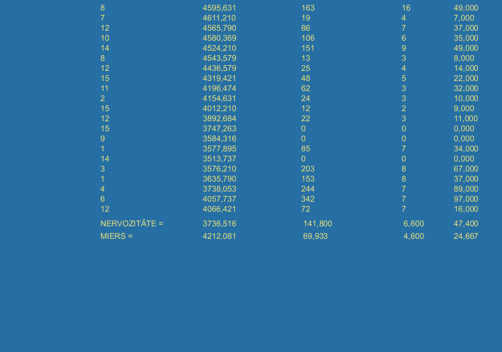

VIENA KANĀLA EDR IERAKSTS PIE NEJAUŠI PREZENTĒTU MIERĪGU UN SATRAUCOŠU 10 SEKUNŽU ILGU SKAŅU SĒRIJAS - REZULTĀTU ANALĪZE
Attēlā parādīts ar programmu algprog007 savākto datu analīzes rezultāts uz datora ekrāna. Pirmajā stabiņā attēloti skaņas faila numuri. Atceramies, ka numuri 1, 2, 3 un 4 ir uztraucoši (plīstošs stikls, kliedziens, u,c,), pārējie - mierīgi (putnu dziesmas, strauta čalas, u.c.). stabiņos no kreisās puses uz labo mēs redzam dažādus datora aprēķinātos ādas elektriskos fenomēnus pie katra 10 sekunžu ilgā konkrētās skaņas atskaņojuma. Katra rindiņa apraksta vienu šādu 10 sek ilgu epizodi. Lejā redzams kopsavilkums: vidējie dati pie mierīgām un pie uztraucošām skaņām.
Parasti cilvēkam raksturīga dabīga, vidēji izteikti pastiprināta reakcija pie satraucošām skaņām. Pārmērīgs šādas reaktivitātes fakts liecina par stresu, apgrūtinātu adaptāciju, savukārt pārmērīgi izlīdzināta reakcija - uz nomāktību, depresiju, pārmērīgu vienaldzību.